Tour A Basics
For anyone who will log calls: no setup needed.
This is a guided path through RangerTrak, to explore at your own pace. It is a casual ride among friends, not a race: stop when you like, wander off the path, take a rest stop, and come back another day. Everything happens in your own browser, on made-up data: nothing you do can reach anyone else, so experiment freely.
Each step is a pass: you did it, it worked, and now you know it. The passes add up to skills, and a tick box beside each one keeps count (your ticks stay in this browser). If something is odd, slow or missing, note the step ID and one line; the Feedback tab says where to send it.
Bookmark this page (rangertrak.org/tour) and come back when you have more time. After the first look, you can start almost anywhere. Apart from setup (app install, map downloads and place-name lookups) you will not need Internet: test that by turning on Airplane mode, or by turning off Wi-Fi and mobile data.
Every leg is a short scene for up to four people: the Scribe at the keyboard, Net control speaking for the base, a Field team reading the call cards, and an optional Observer. Between legs everyone moves one seat round. Solo? Play every seat and read the cards aloud anyway. Seats and rotation in full are on the Reference tab.
Take them in order, or jump to the one you need. Each tour is a route of legs; every leg is its own page, with a rest stop (a seat swap) between legs.
For anyone who will log calls: no setup needed.
For whoever sets up and runs a mission.
For enthusiasts: RangerView, field phones, several posts and extras.
A standard browser with Internet. Solo. This tour uses Easy menus, which is what RangerTrak shows a new browser.
Find out what RangerTrak is for, and get your bearings before you rely on it.
You’ve heard RangerTrak is a radio log that works with no Internet. Before trusting it, you look round somebody else’s mission data.

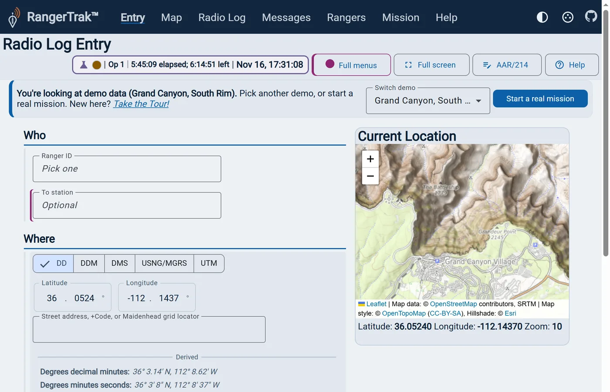
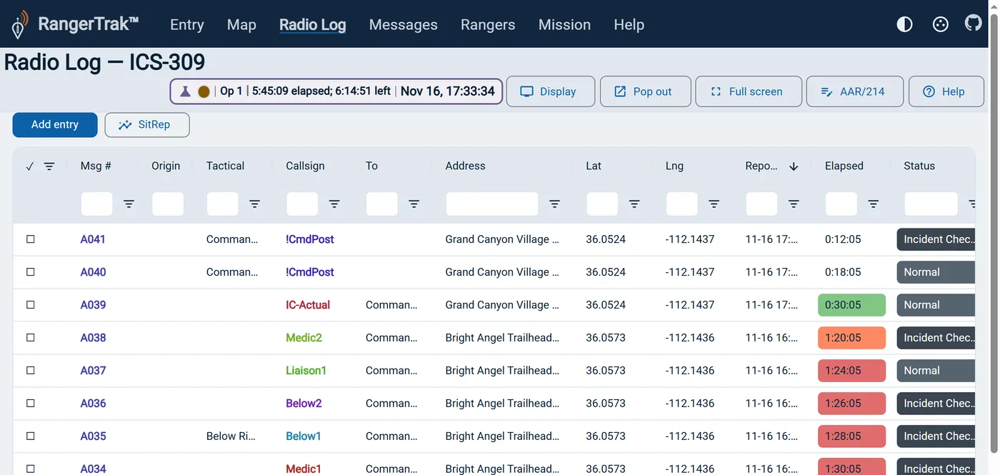
Skills learned: load a demo; move between Entry, Radio Log, Map, Messages and Rangers; use Help, on each screen and the full page; switch Full menus and Easy menus; save an AAR/214 note.
Anything odd, slow or missing? Note the step ID and one line.
The Grand Canyon demo loaded. Seats: Scribe and Net control (solo, you do both), plus a Field team to read the cards if you have a partner. A laptop with a modern browser. (Smartphones can work in a pinch, but can’t edit entries, aren’t as efficient for rapid data entry, and have other limitations.)
Take a check-in and a call for help from a field team, and keep track of which calls still need action.
Team Hermit is on the rim trail west of the Village. It checks in, then finds a hiker with a twisted ankle.
Read each call aloud (or have your field team read it over the radio), then log it on the Entry page. (A field report and a radio call are both called an entry: same thing.) For Hermit, use the demo’s Rim1, Wren Cliffside: type Cliff in Ranger ID and pick her from the list.
Radio practice. Four words to use today: THIS IS (who is speaking), OVER (your turn), OUT (finished), and ROGER (I received that; not "yes"). The Field team says them as written; Net control answers.
| Card | The call | Log it as |
|---|---|---|
| 1 | Hermit: Village Base, THIS IS Hermit, OVER. Base: Hermit, Village Base, go ahead, OVER. Hermit: On the rim trail west of the Village. All four present, starting our sweep. OVER. Base: ROGER, OUT. | Rim1. The small map already sits at the Village: leave it. Status: Incident Check-in |
| 2 | Hermit: Village Base, THIS IS Hermit, OVER. Base: Hermit, Village Base, go ahead, OVER. Hermit: A hiker with a twisted ankle, a few hundred meters on. We’re with her. OVER. Base: ROGER, OUT. | Click the small map a bit to the west (left). Status: Urgent. Notes: the call |
| 3 | Hermit: Village Base, THIS IS Hermit, OVER. Base: Hermit, Village Base, go ahead, OVER. Hermit: Ankle is wrapped, she’s walking out with us. Cancel the request. OVER. Base: ROGER, OUT. | Same spot. Status: Normal |
Cliff, Rim1) offers matches. #
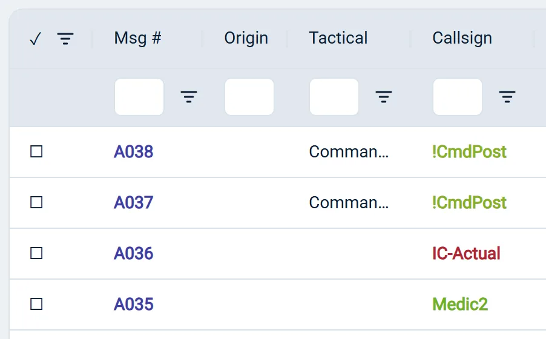
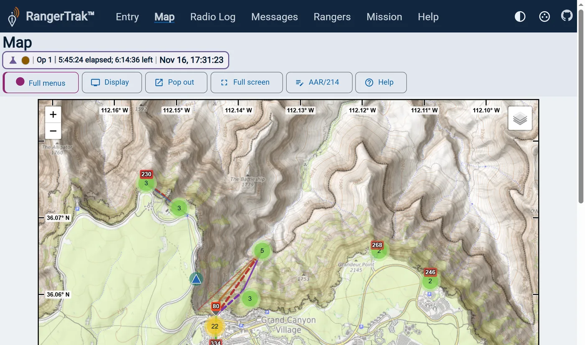
Skills learned: log an entry on Entry with a Ranger ID, location and status; find its message number on the Radio Log; mark it ✓, → or !; edit it.
Anything odd, slow or missing? Note the step ID and one line.
The Grand Canyon demo loaded. Seats: Scribe, Net control and Field team; solo or pairs. Internet is not needed, except for place-name lookups.
Write down where a team is, as the numbers are read to you or as a place name.
A team reads its position off a phone or a map, one digit at a time.
Entry shows latitude and longitude in decimal degrees: whole degrees in the first box, then the decimals in the second. West longitudes take a minus sign (−112). Log each card as a new entry (any ranger will do), then check where it lands on the Map.
Radio practice. FIGURES means the next numbers are read one digit at a time: ZERO, ONE, TWO, THREE… NINER. Say "decimal" for the point, then read the digits.
| Card | The call | Should land at |
|---|---|---|
| 1 | Hermit: Village Base, THIS IS Hermit, OVER. Base: Hermit, Village Base, go ahead, OVER. Hermit: Position, FIGURES three six decimal zero five seven one north, one one two decimal one four three eight west. OVER. Base: ROGER, OUT. | Bright Angel trailhead |
| 2 | Mather: Village Base, THIS IS Mather, OVER. Base: Mather, Village Base, go ahead, OVER. Mather: Position, FIGURES three six decimal zero six one seven north, one one two decimal one zero nine zero west. OVER. Base: ROGER, OUT. | Mather Point |
| 3 | Hermit: Village Base, THIS IS Hermit, OVER. Base: Hermit, Village Base, go ahead, OVER. Hermit: We are at Desert View Watchtower. OVER. Base: ROGER, OUT. (a place name: needs Internet; type it in the box that says Street address, +Code, or Maidenhead grid locator, and press Enter) | The far east end of the rim road, about 28 km east of the Village |
Skills learned: enter a location in decimal degrees or as a place name; read the Derived list; edit an entry; show selected Radio Log entries on Map; know what stops working offline.
Anything odd, slow or missing? Note the step ID and one line.
The Grand Canyon demo, in Easy menus. Seats: Scribe logs. Net control speaks for Village Base. Field team: one person each for Hermit (the demo’s Rim1, Wren Cliffside) and Mather (Rim3, Mesa Longstride), reading the cards in order, as fast as the scribe can keep up and then a little faster. Observer keeps time. Internet is not needed.
Keep up with a busy net: two teams, a lost hiker, a formal request for help and a spoken correction.
09:00. Teams Hermit and Mather head out along the rim.
Solo, you play every seat: read each card aloud, then log it. Each card is a whole exchange; log the message part.
Radio practice. Today’s new words: SAY AGAIN (repeat that), WAIT (hold on), CORRECTION (I got that wrong, here is the right version), BREAK (a pause inside a formal message), and INITIALS. In a formal message the heading, the text and the sender are separated by BREAK.
| Card | The call | Log it as |
|---|---|---|
| 1 | Hermit: Village Base, THIS IS Hermit, OVER. Base: Hermit, Village Base, go ahead, OVER. Hermit: On foot west of the Village, starting out. OVER. Base: ROGER, OUT. | Rim1; a spot on the rim west of the Village |
| 2 | Mather: Village Base, THIS IS Mather, OVER. Base: Mather, Village Base, go ahead, OVER. Mather: On foot east of the Village, starting out. OVER. Base: ROGER, OUT. | Rim3; a spot on the rim east of the Village |
| 3 | Hermit: Village Base, THIS IS Hermit, OVER. Base: Hermit, Village Base, go ahead, OVER. Hermit: Lost hiker, male, about 70, confused, at the Abyss overlook. Request a carry-out team. OVER. Base: SAY AGAIN the location, OVER. Hermit: I SAY AGAIN, Abyss overlook. OVER. Base: ROGER. WAIT. (Net control starts card 4, then:) Base: Hermit, carry-out team requested, OUT. | Rim1; a spot further west; status Urgent. Notes: the call |
| 4 | Base: Park Dispatch, THIS IS Village Base, formal message for you, OVER. Dispatch: Village Base, Park Dispatch, go ahead, OVER. Base: BREAK. Request carry-out team to the Abyss overlook, one adult male, conscious, disoriented. BREAK. INITIALS Alpha Lima. OVER. Dispatch: ROGER, OUT. | Scribe sends a formal message to Park Dispatch (log as an ICS-213) |
| 5 | Mather: Village Base, THIS IS Mather, radio check, OVER. Base: Mather, WAIT. (a few seconds go by) Mather, Village Base, you are weak but readable, OVER. Mather: ROGER, OUT. | Rim3; a plain check-in, same spot as card 2 |
| Card | The call | Log it as |
|---|---|---|
| 6 | Mather: Village Base, THIS IS Mather, OVER. Base: Mather, Village Base, go ahead, OVER. Mather: Further east now, all clear, continuing. OVER. Base: ROGER, OUT. | Rim3; a bit further east |
| 7 | Hermit: Village Base, THIS IS Hermit, OVER. Base: Hermit, Village Base, go ahead, OVER. Hermit: Carry-out team arrived, patient handed over. CORRECTION: the hiker was about 71, not 70. OVER. Base: ROGER, OUT. | Rim1; same place as card 3. Fix the age in card 3’s notes, and log this call as its own entry |
Cliff, Long, Rim3) find the caller. Hermit’s calls are Rim1’s, Mather’s are Rim3’s. #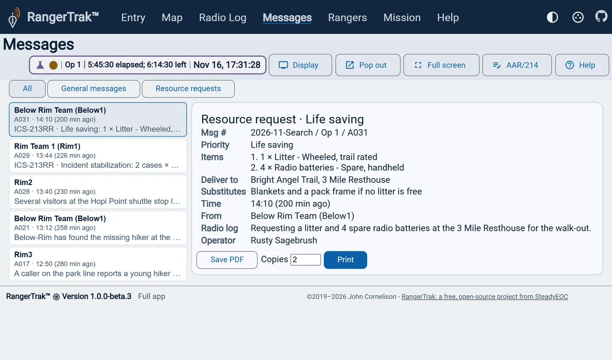
Skills learned: fill in an ICS-213 message; fix an entry after a CORRECTION; add an ICS-214 line from AAR/214; mark entries ✓ and ! on the Radio Log.
Anything odd, slow or missing? Note the step ID and one line.
The Grand Canyon demo, with Internet for the first steps. Seats: Scribe, plus an Observer if you like. Solo works fine.
Keep the log going when the Internet goes down, and get it back if the laptop is lost.
10:15. The cell tower at the Village goes down, and the scribe’s laptop is on battery or generator. This is what RangerTrak is for, so test it the hard way.
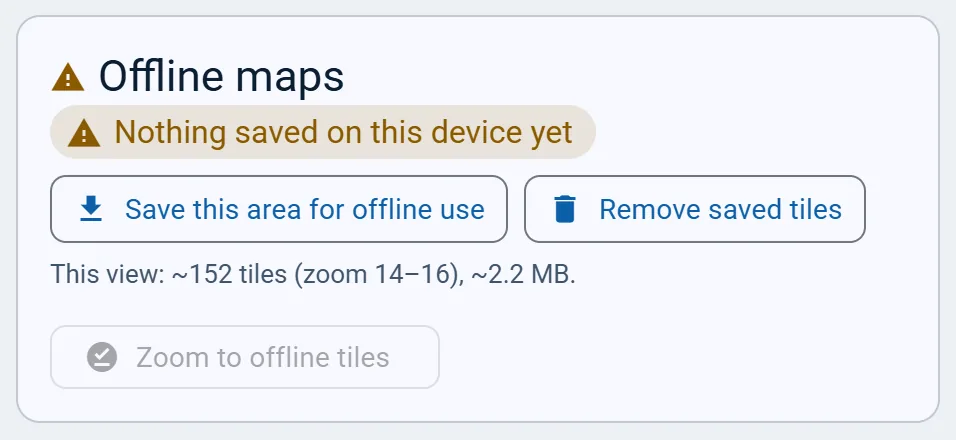
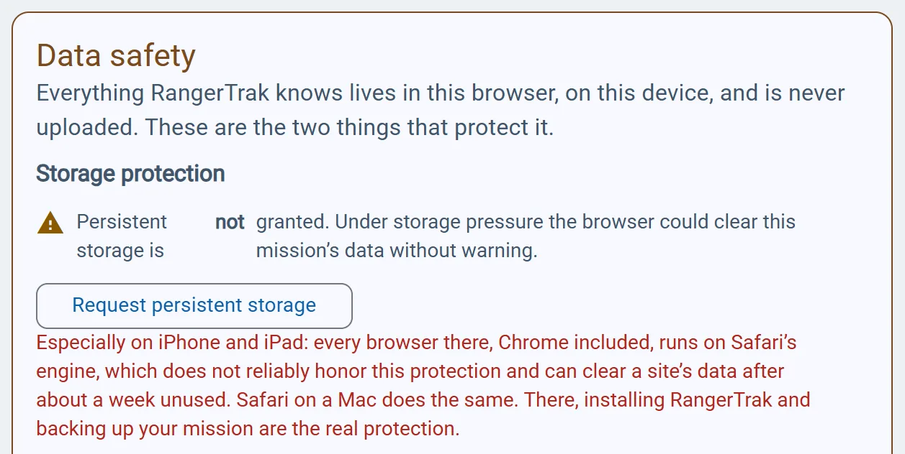
Skills learned: install RangerTrak; Save this area for offline use on Map; log offline; check Data safety on Mission; Back up mission with a passphrase; Restore mission.
Anything odd, slow or missing? Note the step ID and one line.
The mission from the earlier legs of Tour A. Seats: whoever is scribe now; an Observer helps. Internet is not needed, except as noted.
Finish the paperwork: the log for the record, and lessons learned for next time.
15:00. The teams are home and the food is on. The paperwork is the part people remember, so it should be the easy part.
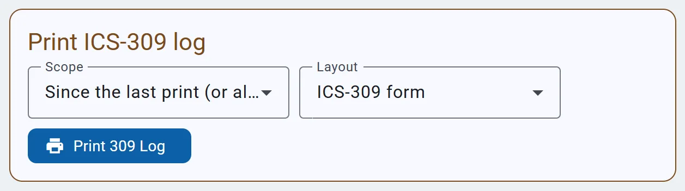
Skills learned: print the ICS-309 log; add to AAR notes; Export ICS-214; Review and send.
Anything odd, slow or missing? Note the step ID and one line.
Any browser. Full menus on. Seats: Scribe, with an Observer if you have a partner. Internet is not needed.
Start a real mission of your own, name it, set its period and station letter, and know how one ends and the next begins.
The park has asked your team to sweep the rim trail on Saturday. You have an hour at the kitchen table.
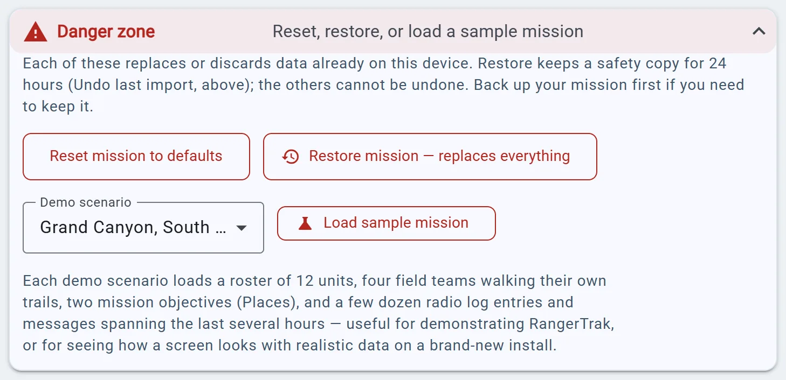
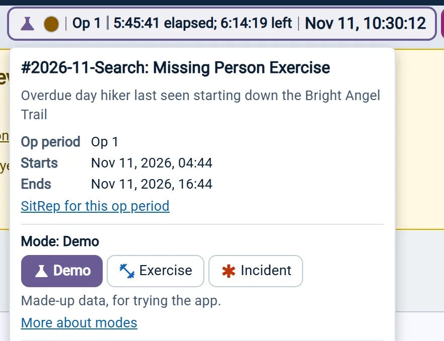
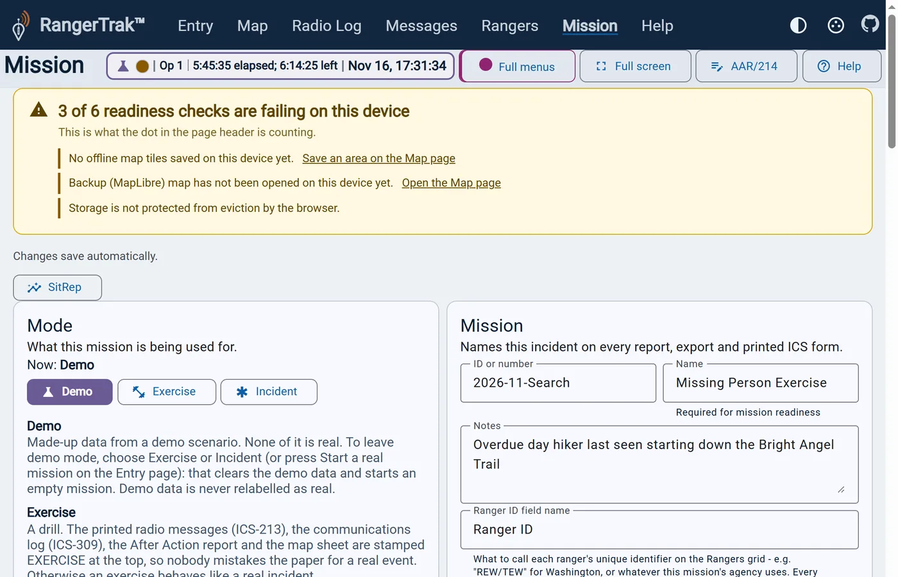
Skills learned: Full menus; Start a real mission; read the Danger zone; choose Exercise; set the mission name, operational period, default location and station letter; know how a mission ends and the next one starts.
Anything odd, slow or missing? Note the step ID and one line.
Any text editor, for two small files. Full menus on, the Rim Sweep mission from B1. Seats: Scribe. Internet is not needed.
Get your people and your places into the mission before anyone goes out.
You have a roster in a spreadsheet and a short list of places the teams will use.
Save these lines as rim-roster.csv (any text editor will do; separate the fields with tabs, semicolons, commas or pipe symbols):
Name,Call sign,Cell,Team,Status Avery Lindqvist,WZ0RIM,555-0101,Hermit,Active Sam Okafor,WZ0SAM,555-0102,Hermit,Active Jo Whitecloud,WZ0JO,555-0103,Mather,Active Riley Park,,555-0104,Mather,Active Morgan Ellis,WZ0OLD,555-0105,Mather,Retired
And these as rim-places.csv:
Name,Category,Latitude,Longitude,Address,Notes Village Staging,Staging Area,36.0544,-112.1401,,Park cars and check in here Mather First Aid,Ranger First Aid,36.0617,-112.1090,,Mather Point
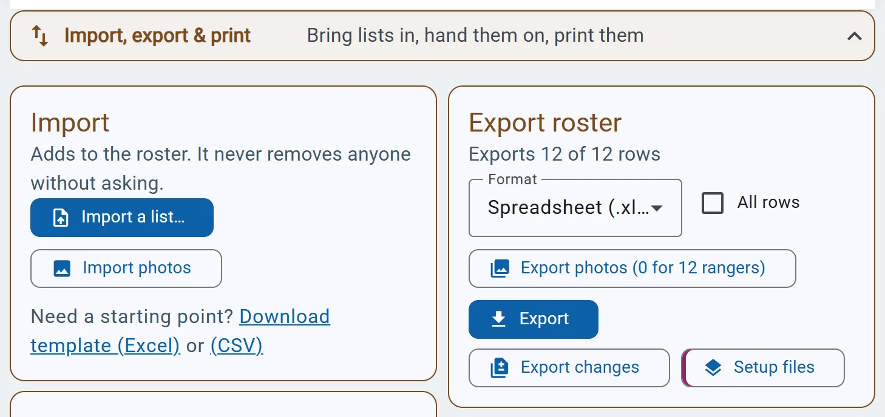
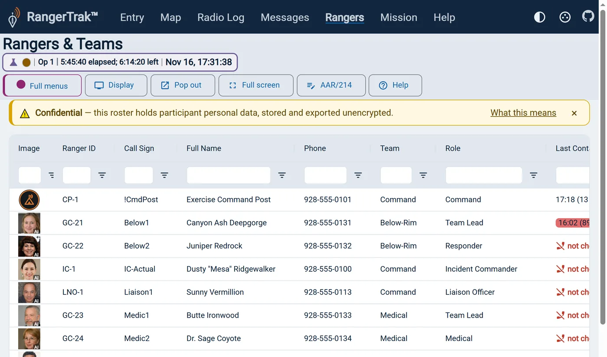
Radio practice. Names and call signs are what I SPELL is for. Say the word, then spell it in phonetic letters: "Okafor, I SPELL Oscar Kilo Alpha Foxtrot Oscar Romeo." Call signs get the same, with FIGURES for the digits: "WZ0SAM: I SPELL Whiskey Zulu, FIGURES ZERO, Sierra Alpha Mike." Pass the roster round: each of you spells one name and one call sign to Net control, who writes it down and reads it back.
Skills learned: import a roster on Rangers and skip Retired; add a person by hand; Undo last import; import and add Places; spell names and call signs on the radio.
Anything odd, slow or missing? Note the step ID and one line.
Full menus on, with the roster and Places from B2. Seats: Scribe at the post; Net control optional; Observer takes notes. Internet helps for the map download; the rest does not need it.
One post, ready to run: your own status words, tactical call signs with operators, a Setup file to start other devices from, a map that works without Internet, and a backup.
Saturday morning, before the teams head out. (If it rains, take it outside: wet fingers are a real test. Don’t dry off to make a test pass; note what the weather did.)
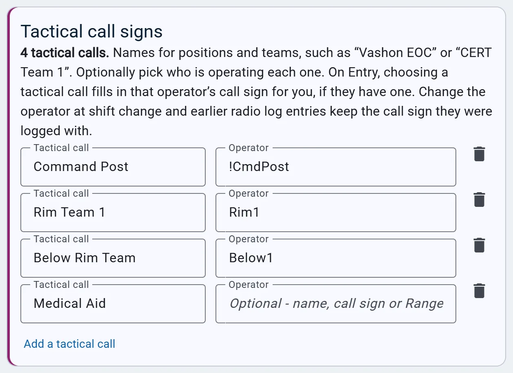
Skills learned: rename a status; add Tactical call signs and assign operators; Export Setup file; Save this area for offline use; Data safety; Back up mission.
Anything odd, slow or missing? Note the step ID and one line.
Full menus. Seats: Scribe; Net control (the scribe, solo or pairs); Field team reads the cards, ideally from a phone that shows latitude and longitude; Observer keeps time. Internet not needed. The Ops chief is whoever wants the big picture at the base; your Observer can play them. Works with a small crew, or solo playing every seat, continuing Rim Sweep.
Log every position report so it lands in the right spot, whatever format the caller reads, and catch mistakes before they spread.
Teams call in from whatever map or GPS they carry: degrees and minutes, MGRS, UTM, a grid square.
Entry has a small switcher above the coordinate boxes: pick the format the caller used, type, and the others fill in by themselves. Log each card as a new entry, then check where it lands. All the prowords, as before.
| Card | The call | Should land at |
|---|---|---|
| 1 | Mather: Village Base, THIS IS Mather, OVER. Base: Mather, Village Base, go ahead, OVER. Mather: Degrees and decimal minutes. FIGURES three six degrees, zero three decimal seven zero two minutes north; one one two degrees, zero six decimal four six eight minutes west. OVER. Base: ROGER, OUT. | Mather Point |
| 2 | Hermit: Village Base, THIS IS Hermit, OVER. Base: Hermit, Village Base, go ahead, OVER. Hermit: MGRS. One two, Sierra Uniform Echo, FIGURES niner zero niner eight zero, niner one two niner two. OVER. Base: ROGER, OUT. | Hermits Rest, the west end of the rim road |
| 3 | Mather: Village Base, THIS IS Mather, OVER. Base: Mather, Village Base, go ahead, OVER. Mather: UTM. Zone one two Sierra, easting FIGURES three niner niner four zero niner, northing FIGURES three niner niner one eight two three. OVER. Base: ROGER, OUT. | Yavapai Point |
| 4 | Hermit: Village Base, THIS IS Hermit, OVER. Base: Hermit, Village Base, go ahead, OVER. Hermit: Maidenhead grid square Delta Mike three six, I SPELL whiskey bravo. OVER. Base: ROGER, OUT. | Somewhere in a box a few km across around the Village |
| Card | The call | Log it as |
|---|---|---|
| 5 | Hermit: Village Base, THIS IS Hermit, OVER. Base: Hermit, Village Base, go ahead, OVER. Hermit: CORRECTION, my last longitude should read one one two decimal one four four three west. OVER. Base: ROGER, OUT. | Fix that entry on the Radio Log; don’t add a new one |
| 6 | Mather: Village Base, THIS IS Mather, OVER. Base: Mather, Village Base, go ahead, OVER. Mather: Formal message for the Ops chief. BREAK. Request a second radio battery at my location. BREAK. INITIALS Juliet Whiskey. OVER. Base: ROGER, OUT. | Fill in the ICS-213 part of Entry, addressed to the Ops chief |
| 7 | Hermit: Village Base, THIS IS Hermit, OVER. Base: Hermit, Village Base, go ahead, OVER. Hermit: Taking a photo of the trail washout for you. OVER. Base: ROGER, OUT. | Attach any photo (on a phone, Take photo / video) |
| 8 | Base: Mather, Village Base, OVER. (Silence: the Observer has asked Mather not to answer this once.) Base: Mather, Village Base, nothing heard, OUT. | Mark the last Mather entry ! on the Radio Log |
| 9 | Mather: Village Base, THIS IS Mather, OVER. Base: Mather, Village Base, go ahead, OVER. Mather: Shift change. Jo is handing the radio to Riley. OVER. Base: ROGER, OUT. | On Mission, change who is operating Mather |
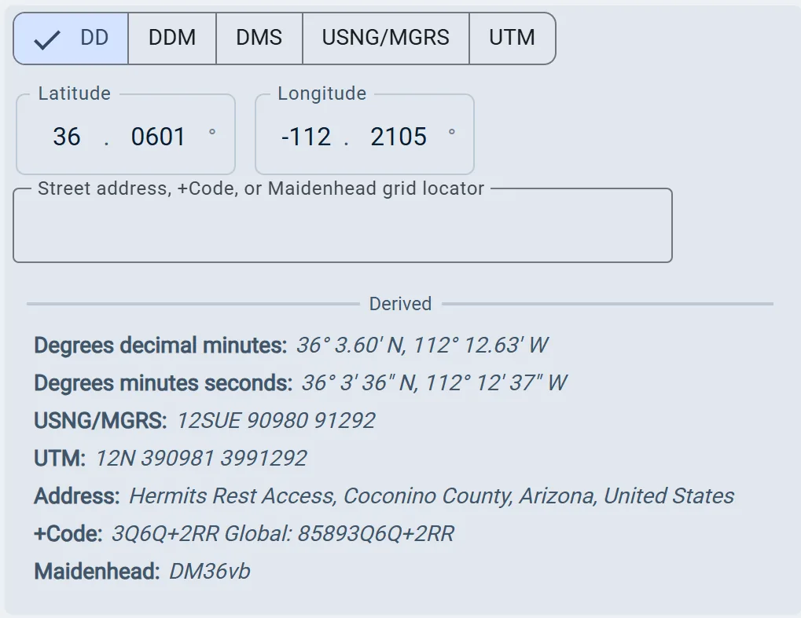
Skills learned: the coordinate format switcher in DD, DDM, MGRS, UTM and Maidenhead; fix an entry on the Radio Log; ICS-213 to a named recipient; an ICS-213RR resource request; Attach a photo; disposition marks; change who is operating a team.
Anything odd, slow or missing? Note the step ID and one line.
Full menus. Internet only for sending feedback. Seats: whoever is scribe; the Observer collects the findings.
Keep the record, and get every finding written down before people leave.
15:10. Rangers are back, maybe wet. Ten minutes before the room empties.
Skills learned: print the ICS-309 log; Print map; Export ICS-214; Back up mission; AAR/214 notes.
Anything odd, slow or missing? Note the step ID and one line.
The scribe’s laptop can optionally publish radio logs to RangerView over the command post’s Wi-Fi. Key staff (those with the password) can instantly view radio reports from the field as they are logged, and also search, sort, filter and track messages of key interest. Seats: a Scribe, and key staff or an Observer with a phone. Internet is not needed.
Before you start, while you still have Internet: download RangerView (the rangerview-….zip under Assets on the latest release), unzip it, and run Start RangerView (Windows .bat; on a Mac, right-click the .command file → Open).
Install RangerView, open RangerView in a web browser, test the connection, and try filtering and flagging key messages.
The incident commander, command and general staff all want immediate situation updates from the radio log, without crowding the scribe.

Skills learned: start RangerView; turn on publishing in Mission’s RangerView card with a viewers’ password; Test connection; use RangerView from a phone to focus on key entries.
Anything odd, slow or missing? Note the step ID and one line.
A phone with a browser, as well as the scribe’s laptop, and some way to move a file between them: cell signal for email or messages, Quick Share or AirDrop. Seats: a Field team (the phone), a Scribe (the laptop). Internet is optional.
Take reports from teams by phone as well as by radio, and know for certain which reports the command post has.
The Mather team has phones with RangerTrak on them. Their cell signal can sometimes reach you when radios won’t, and what they found is easier shown than described.
Keep the radio call too. Phone reports are extra: a photo of the fact, not a repeat of the position call. Otherwise the command post’s log shows each report twice.
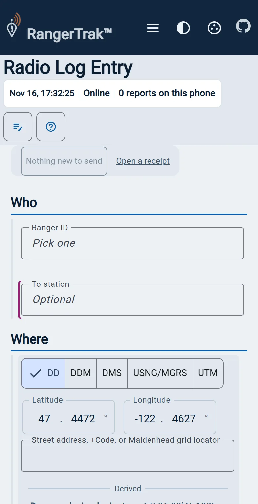

Skills learned: use a field phone; Send new reports; Edit before sending; My reports; Load Report Packet on the Radio Log; Send a receipt and Open a receipt; Mark sent reports received; Clear received reports.
Anything odd, slow or missing? Note the step ID and one line.
Two or more posts, each with its own device (or browser profile), and one "Ops laptop" that only shows, never logs. Full menus on. The Setup file you saved in B3 (B3.4). A shared passphrase, said aloud, not written down. A USB stick, or cell signal, or Quick Share / AirDrop to move a file. Seats: a Scribe at each post; an Observer can run the Ops laptop.
Start a second post from the first one’s Setup file, then show the Ops chief where every ranger is and what they found, from all posts at once, without anyone retyping.
Two command posts, one shared roster, and nobody wants to type a roster twice. At set times the controller calls "hand-over". Each post sends its log to the Ops laptop.
Skills learned: Import a Setup file on a second post; This station logs as a different letter; Hand over to another scribe; Merge in from several posts; read the merge preview; Log alongside as a station letter; Map popups.
Anything odd, slow or missing? Note the step ID and one line.
Full menus on. Seats: Scribe. Internet is not needed. Back up first (B3.7): loading a demo replaces the mission, so use a spare browser profile if you want to keep yours.
Try the smaller extras, one at a time. Each is short.
A quiet half hour, and a few things you were curious about.
Skills learned: switch to the Alternative map; choose a color scheme; work in a large demo; From and To station; Source.
Anything odd, slow or missing? Note the step ID and one line.
Things to look up while you ride: radio words, the seats, how the passes work and who is who in the demos.
Every call card is written as a real exchange, the way a net runs, so the tour doubles as practice with the phonetic alphabet and prowords (the short standard words that keep radio traffic clear). They are practice for people: RangerTrak does not check any of it, and where your own net’s procedure differs, yours wins. The first set below is from the ARRL’s prowords page; the second is standard voice-net practice that the cards also use.
| Proword | What it means |
|---|---|
| ROGER | I received your message. It does not mean "yes". |
| AFFIRMATIVE / NEGATIVE | Yes / no. |
| I SPELL | I will spell the next word letter by letter, in phonetic letters. |
| I SAY AGAIN | I am repeating what I just said. |
| FIGURES | The numbers that follow are read one digit at a time. |
| INITIALS | The letters that follow are initials, not a word. |
| BREAK | A pause between the parts of a formal message, such as its heading and its text. |
| THIS IS | Who is calling: "Village Base, THIS IS Hermit." |
| OVER | I have finished; your turn to talk. |
| OUT | This exchange is finished. No reply needed. |
| SAY AGAIN | Please repeat your last message. |
| WAIT / WAIT OUT | WAIT: hold on a few seconds. WAIT OUT: it will be longer; I will call you back. |
| CORRECTION | I made a mistake; here is the right version. |
The tour brings them in a little at a time. Leg A2: THIS IS, OVER, OUT, ROGER. Leg A3: FIGURES. Leg A4: SAY AGAIN, WAIT, CORRECTION, BREAK, INITIALS. Leg B2: I SPELL. Tours B and C use them all as a matter of course.
| Letter | Say | Letter | Say | Letter | Say |
|---|---|---|---|---|---|
| A | Alpha | J | Juliet | S | Sierra |
| B | Bravo | K | Kilo | T | Tango |
| C | Charlie | L | Lima | U | Uniform |
| D | Delta | M | Mike | V | Victor |
| E | Echo | N | November | W | Whiskey |
| F | Foxtrot | O | Oscar | X | X-ray |
| G | Golf | P | Papa | Y | Yankee |
| H | Hotel | Q | Quebec | Z | Zulu |
| I | India | R | Romeo | . | decimal |
Figures: ZERO, ONE, TWO, THREE, FOUR, FIVE, SIX, SEVEN, EIGHT, NINER (not "nine", which can sound like "no"). All the call signs on the cards are made up, in the WZ0… pattern.
Every leg is a short scene for up to four people. Seats are named the same in every tour:
| Seat | What you do |
|---|---|
| Scribe | At the keyboard: logs every call in RangerTrak. |
| Net control | The base’s voice on the radio. Solo or in pairs, the scribe does this too. |
| Field team | One or more people. Walk the route, read the call cards aloud, and say where you are. |
| Observer | Optional. Keeps time, keeps a paper log if you want one, and writes down the step IDs of anything odd. |
Each leg’s Setup box says which seats it needs. Between legs there is a rest stop: swap seats, everyone moves one seat round, and the new scribe starts the next leg. The two long legs (A4 and B4) also have a swap in the middle. Solo? You play every seat. Read the cards aloud anyway: saying the words is half the practice.
A step is a pass when you did it and it worked: that is how you learn the app, one working step at a time. Every step has an ID, the leg plus a number, such as A3.2 (Tour A, leg 3, step 2). A few steps are questions instead, with IDs such as A3.Q1: those are the only places we need an answer, and they are listed on the Feedback tab. Each leg ends with one plain line: "Anything odd, slow or missing? Note the step ID and one line."
If something breaks, carry on: the next step rarely depends on it. Note the ID and, if you can, press AAR/214 at the top of the page right then (leg A1 shows you how) to record your observation. The Feedback tab says where to send what you found, and has a checklist for anyone who likes paper at a drill.
Tour A runs on the Grand Canyon, South Rim demo, which already has a roster and about forty radio log entries. The call cards use three names, so you can read them aloud without hunting through the roster:
| Name on the cards | Who they are | Tour A (the demo roster) | Tours B and C (your own roster) |
|---|---|---|---|
| Village Base | The command post and its net control. Whoever speaks for the base. | Command Post (!CmdPost) | The same |
| Hermit | A field team walking the rim trail west, toward Hermits Rest. | Rim1, Wren Cliffside (team Rim-West) | Sam Okafor, WZ0SAM |
| Mather | A field team walking the rim trail east, toward Mather Point. | Rim3, Mesa Longstride (team Rim-East) | Jo Whitecloud, WZ0JO |
| Park Dispatch | The agency that receives your formal messages. | Typed in as a recipient | The same |
Everyone and every call sign in the demos is made up (call signs in the WZ0… pattern). None of our demos refer to real people or actual events, though some places are based on historic incidents. We are not linked to the National Park Service or those previous disasters.
Thanks for taking the tour, and congratulations on adding some new skills to your toolbelt! Come back any time: the legs work in any order after the first look.
One line per item is plenty: the ID, what you saw, and your device. A pass is worth sending too: "A5.3 passed, iPhone 13" tells us that phone works offline.
| Way | Best when | How |
|---|---|---|
| In the app | Anytime, even offline | AAR/214, mark it RangerTrak, start with the ID. Later, AAR notes → Review and send. It becomes a public GitHub issue, so keep real names and mission data out |
| You kept notes on paper | RangerTrak@steadyeoc.com, subject Tour, one ID per line | |
| GitHub | You found a clear bug | github.com/SteadyEOC/RangerTrak/issues, ID in the title |
Keep your files. Don’t send your backup file or the app’s diagnostic log. If we need one to track something down, we’ll ask, and say which.
Examples.
Tour A has 36 passes and 5 questions. Tour B has 39 passes and 1 questions. Tour C has 27 passes and 4 questions. Nobody is expected to do them all: a few legs and three honest lines help more than a full sheet of ticks.
Name ____________________ Date __________ Device and browser ____________________ RangerTrak version __________
| Done | ID | Step | Pass | Fail | Note |
|---|---|---|---|---|---|
| Tour A · Basics (36 passes, 5 questions) | |||||
| Leg A1 · First look | |||||
| A1.1 | Optional. Open rangertrak.com and look over its pages: What it does, Field Guide, Blog. No… | ||||
| A1.2 | Press Open RangerTrak (or go to rangertrak.org). The Entry page loads, and a card offers a… | ||||
| A1.3 | Load the Grand Canyon, South Rim demo from the Entry card, or Help → Start → Load a demo.… | ||||
| A1.4 | Explore the Map, Radio Log, Messages and Rangers pages using the links at the top. Each sh… | ||||
| A1.5 | Press Help at the top of any page. It explains that screen; its link at the bottom opens t… | ||||
| A1.6 | Press Full menus at the top of Entry. More controls appear (Attach, for one). Press it aga… | ||||
| A1.7 | Optional. Press AAR/214 at the top of any page. Use it for your After Action Review notes… | ||||
| A1.8 | Optional. Close the browser completely, restart the device if you like, then open rangertr… | ||||
| A1.Q1 | Is RangerTrak a good name for what you just saw? If not, what would you call it? | ||||
| A1.Q2 | How does your team call in their reports: with a call sign, a credential ID, a position ti… | ||||
| Leg A2 · Your first radio call | |||||
| A2.1 | Typing any part of a ranger’s name, ID or call sign in Ranger ID (Cliff, Rim1) offers matc… | ||||
| A2.2 | Clicking Entry’s small map sets the location straight away: the latitude and longitude box… | ||||
| A2.3 | Each saved entry gets a message number: the station letter and a count, such as A042 (the… | ||||
| A2.4 | On the Radio Log, click the small disposition box at the left of card 2’s entry. It cycles… | ||||
| A2.5 | Your three entries are on the Map, near the Village and west of it. | ||||
| A2.6 | Double-click an entry’s notes on the Radio Log to edit them. Press Enter to save. | ||||
| Leg A3 · Where exactly? | |||||
| A3.1 | Each of cards 1 to 3 lands where the last column says. | ||||
| A3.2 | Under the coordinate boxes, the Derived list shows the same point in other formats: degree… | ||||
| A3.3 | On the Radio Log, click one of the three entries from this leg, then Ctrl-click (Cmd-click… | ||||
| A3.4 | On the Radio Log, double-click the notes of one of your entries, change them and press Ent… | ||||
| A3.5 | Turn off Wi-Fi (hint: try Airplane mode!) and look at Entry again. The word "Street addres… | ||||
| A3.Q1 | Which coordinate format does your team actually use on the air? Was it easy to read the di… | ||||
| Leg A4 · Run the net | |||||
| A4.1 | In Ranger ID, a few letters of a name or call sign (Cliff, Long, Rim3) find the caller. He… | ||||
| A4.2 | Card 4: tick Also generate an ICS-213, and type Park Dispatch under Additional recipients.… | ||||
| A4.3 | Card 7: on the Radio Log, double-click the notes of card 3’s entry and fix the age. Fix th… | ||||
| A4.4 | Mark card 3’s entry ! and card 7’s ✓ on the Radio Log. (You decide what □, ✓, →, and ! mea… | ||||
| A4.5 | Press AAR/214, choose ICS-214, and add the line "radio relay at the east end weak" with th… | ||||
| A4.Q1 | Did the prowords (THIS IS, OVER, ROGER and the rest) make the calls slower, or clearer? | ||||
| Leg A5 · Lights out | |||||
| A5.1 | Install RangerTrak: press Install (at the bottom of the page, or your browser’s own instal… | ||||
| A5.2 | While still online: on Map, switch the base layer to OpenTopoMap (the layers button at the… | ||||
| A5.3 | Turn off Wi-Fi and mobile data. Close RangerTrak completely and open it again. It opens, w… | ||||
| A5.4 | Log two more calls offline, typing coordinates. They save and number as usual. | ||||
| A5.5 | The Map still shows the Village in detail at the zoom you saved; further out or deeper in,… | ||||
| A5.6 | Turn the network back on. On Mission, Data safety shows the storage status; press Request… | ||||
| A5.7 | Back up mission with a passphrase you will remember. A backup file is saved (with a zip of… | ||||
| A5.8 | Log one more call. Then open Mission’s Danger zone and press Restore mission (it replaces… | ||||
| Leg A6 · After the net | |||||
| A6.1 | Radio Log → Print 309 Log (or save it as a PDF). It lists your message numbers, and your ✓… | ||||
| A6.2 | Open AAR notes (the After action link in the menu; it appears once you have made a note or… | ||||
| A6.3 | Export ICS-214 fills in FEMA’s form with your ICS-214 lines. | ||||
| A6.4 | Press AAR/214, choose RangerTrak, and write a note about the app itself. On AAR notes, Rev… | ||||
| A6.Q1 | Which printout would your coordinator or served agency actually want? Which would they not… | ||||
| Tour B · Advanced (39 passes, 1 questions) | |||||
| Leg B1 · Set up a mission | |||||
| B1.1 | Press Full menus at the top of Entry, and leave it on for the rest of this tour. More cont… | ||||
| B1.2 | If the Grand Canyon demo is loaded, press Start a real mission on Entry’s demo card. Range… | ||||
| B1.3 | On Mission, open the Danger zone at the bottom. Look, don’t press. Its first button is Sta… | ||||
| B1.4 | On Mission, at the top, choose Exercise beside Demo and Incident. (The icon at the left of… | ||||
| B1.5 | On Mission, name it Rim Sweep and set an operational period of today, 09:00 to 15:00. Chan… | ||||
| B1.6 | Under Location defaults, set the default location to the Village, 36.0544, −112.1401. New… | ||||
| B1.7 | Under Operational period, This station logs as is A. Message numbers start with it. | ||||
| B1.8 | How a mission ends and the next one begins: first Back up mission (Mission). Then Start th… | ||||
| Leg B2 · Roster and Places | |||||
| B2.1 | On Rangers, Import, export & print → Import a list… and pick rim-roster.csv. The preview g… | ||||
| B2.2 | RangerTrak offers to skip Morgan Ellis (Retired). Four people arrive. | ||||
| B2.3 | Add a walk-up by hand: Dana Cho, no call sign. It saves without a Save button. | ||||
| B2.4 | Use Undo last import, then import again. The roster goes back and comes back; Dana is hand… | ||||
| B2.5 | On Map, open Import, export & print places and press Import places…. Pick rim-places.csv.… | ||||
| B2.6 | On Map, press Add place and add a third Place by hand, such as a Command Post at the Villa… | ||||
| Leg B3 · Before you go out | |||||
| B3.1 | On Mission, under Radio log statuses, rename one status to your team’s word for it. The Ra… | ||||
| B3.2 | In Tactical call signs on Mission, add Village Base, Hermit, Mather and Desert View. Assig… | ||||
| B3.3 | Back on Entry, Ranger ID lists the tactical calls above the roster. Picking Hermit records… | ||||
| B3.4 | On Mission, Export Setup file. Save it. It carries the mission name, period, roster, Place… | ||||
| B3.5 | On Map, zoom to the area your teams will walk and press Save this area for offline use. Th… | ||||
| B3.6 | On Mission, Data safety shows the storage status; press Request persistent storage if it o… | ||||
| B3.7 | Back up mission with a passphrase you will remember. Keep the file; don’t send it to anyon… | ||||
| B3.8 | Optional. Write down the battery level now. You’ll read it again in B5. | ||||
| Leg B4 · Calls in every format | |||||
| B4.1 | Each of cards 1 to 4 lands where the card table’s last column says. | ||||
| B4.2 | After typing card 2, the derived formats below the switcher show the same point (decimal d… | ||||
| B4.3 | A "west" longitude lands west, not on the far side of the world. If one lands somewhere ab… | ||||
| B4.4 | Every entry’s message number starts with this post’s letter (A…). | ||||
| B4.5 | Card 5: on the Radio Log, double-click the coordinates or notes of the earlier entry and f… | ||||
| B4.6 | Card 6: the request appears on the Messages page with its message number, addressed to the… | ||||
| B4.7 | Card 7: Attach adds a 📎 1 chip to the entry; hovering it on the Radio Log shows the pictur… | ||||
| B4.8 | Card 8: the disposition box cycles ✓, →, ! and back to empty, and a tap lands on the box y… | ||||
| B4.9 | Card 9: on Mission, change who is operating Mather. Earlier Mather entries keep their old… | ||||
| B4.10 | Half-way through typing a call, go to Map to look at the spot, then come back to Entry. Wh… | ||||
| B4.11 | Optional, after card 6: log Mather’s battery once more as a resource request. Tick Also ge… | ||||
| B4.Q1 | RangerTrak has the ICS-213 and the ICS-213RR (Resource Request). Was the 213 good enough f… | ||||
| Leg B5 · Wrap-up | |||||
| B5.1 | Radio Log → Print 309 Log (or save it as a PDF). It is stamped EXERCISE and shows message… | ||||
| B5.2 | On Map, Print map. The sheet shows the rim, the markers and the EXERCISE stamp. | ||||
| B5.3 | Export ICS-214 (on AAR notes) fills in FEMA’s form with your ICS-214 lines. | ||||
| B5.4 | Mission → Back up mission, with a passphrase. Keep the file; don’t send it to anyone. | ||||
| B5.5 | Optional. Read the battery again and note it beside the figure from B3.8. | ||||
| B5.6 | AAR/214, one RangerTrak note per finding, step ID first. Review and send on AAR notes brin… | ||||
| Tour C · Enthusiasts (27 passes, 4 questions) | |||||
| Leg C1 · RangerView | |||||
| C1.1 | Start RangerView on a laptop (either the scribe’s or a second one onsite; for details: Hel… | ||||
| C1.2 | On the scribe’s device, Mission → RangerView card: turn on publishing, enter the address,… | ||||
| C1.3 | On a phone on the same Wi-Fi, scan the QR code, which opens RangerView in the phone’s web… | ||||
| C1.4 | Optional. Connect other phones or laptops, and try searching, sorting, filtering and marki… | ||||
| C1.5 | Close RangerView. Within a minute the phone says it has lost RangerView, and the last repo… | ||||
| C1.Q1 | Who on your team would set this up, and would they manage on their own? | ||||
| Leg C2 · Field phones | |||||
| C2.1 | On the phone, open rangertrak.org, install it, and choose This is my field phone on the we… | ||||
| C2.2 | Log two reports on the phone, with a photo each (hint: try several evidence photos of a do… | ||||
| C2.3 | Log one more report and don’t send it yet. Open it in My reports, press Edit, change the n… | ||||
| C2.4 | On the scribe’s device, Radio Log → Load Report Packet. The reports arrive with the scribe… | ||||
| C2.5 | In the summary that follows, press Send a receipt and send the file back to the phone. On… | ||||
| C2.6 | If no receipt can reach the phone, the post confirms by radio, and the ranger presses Mark… | ||||
| C2.7 | On the phone, press Clear received reports in My reports. It asks first, then removes only… | ||||
| C2.Q1 | Would your field teams actually use Send new reports, or stay on the radio? Why? | ||||
| Leg C3 · Several command posts, one picture | |||||
| C3.1 | On the second post, install RangerTrak, then Import a Setup file… on Mission. The mission… | ||||
| C3.2 | Each post needs its own letter, or two posts hand out the same message numbers. The first… | ||||
| C3.3 | Log a few calls at each post. The numbers read A… at the first and B… at the second. | ||||
| C3.4 | Each post: Radio Log → Hand over to another scribe, with the passphrase. One file is saved… | ||||
| C3.5 | Ops laptop: Radio Log → Merge in and pick the file. It shows what it would add before it d… | ||||
| C3.6 | After merging every post, the Radio Log holds each post’s entries with their own letters (… | ||||
| C3.7 | Later, merging a post’s new file adds only the calls since the last one. Merging the same… | ||||
| C3.8 | A correction made at a post (B4 card 5) shows corrected on the Ops laptop after the next m… | ||||
| C3.9 | A second scribe joins a post: on a device that already has entries of its own, Merge in, a… | ||||
| C3.10 | On Map, each ranger has a marker shape of their own, and a marker’s popup gives call sign,… | ||||
| C3.Q1 | How did the file actually travel between posts (stick, email, Quick Share), and how long d… | ||||
| Leg C4 · Extras | |||||
| C4.1 | On Map, flip the switch to the Alternative map once, then back. | ||||
| C4.2 | In the header, press the palette button (Color scheme) and try Ridgeline, Command, Nightwa… | ||||
| C4.3 | Load the Montecito debris flows (large) demo (about 400 entries) from Mission’s Danger zon… | ||||
| C4.4 | With Full menus on, Entry shows From station and To station. Log one call from Village Bas… | ||||
| C4.5 | Entry’s Source says how the call reached you: Voice, Phone, Packet, APRS or Email. Log a c… | ||||
| C4.Q1 | Does your team name a destination (To station) for each message? | ||||